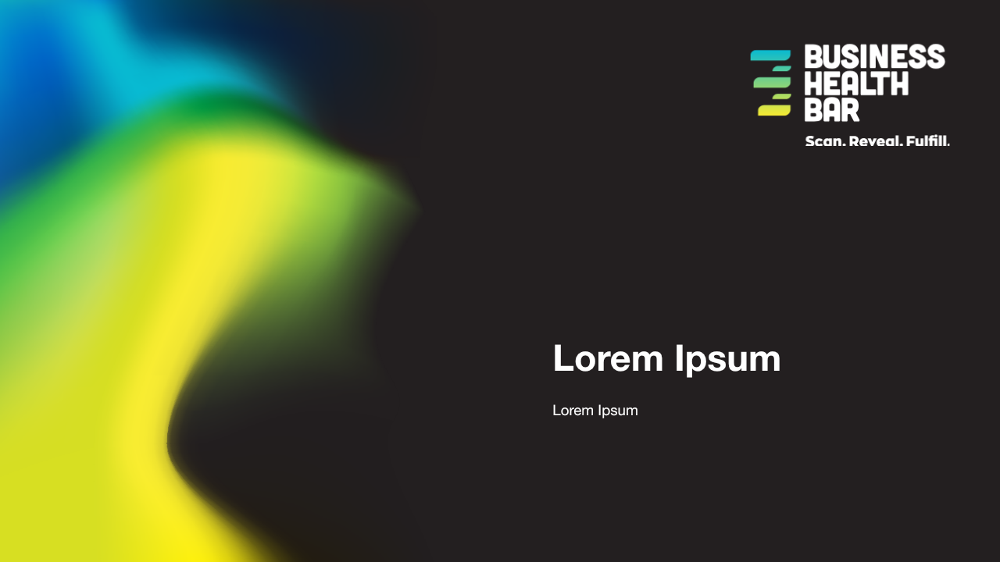
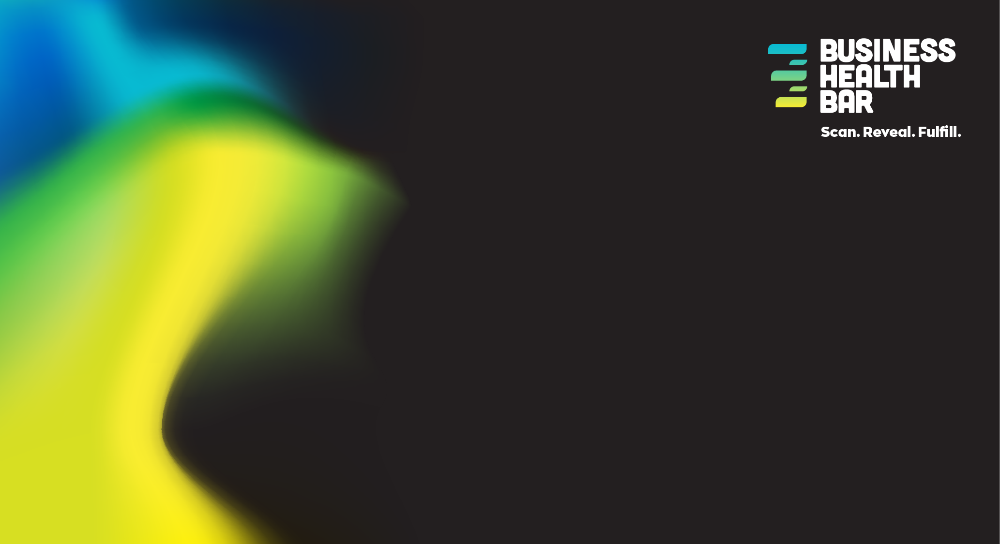
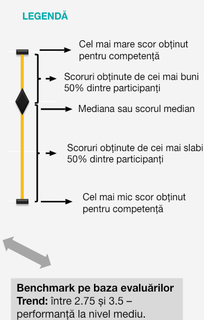
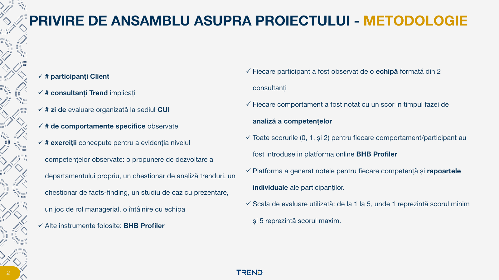
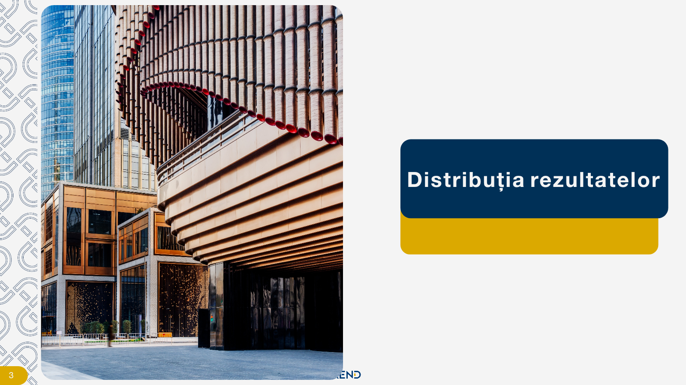
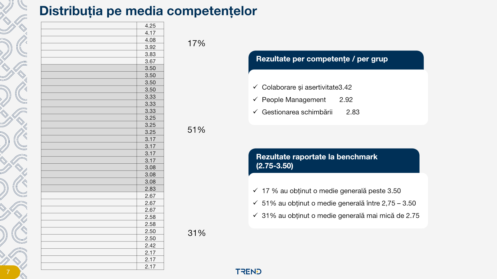
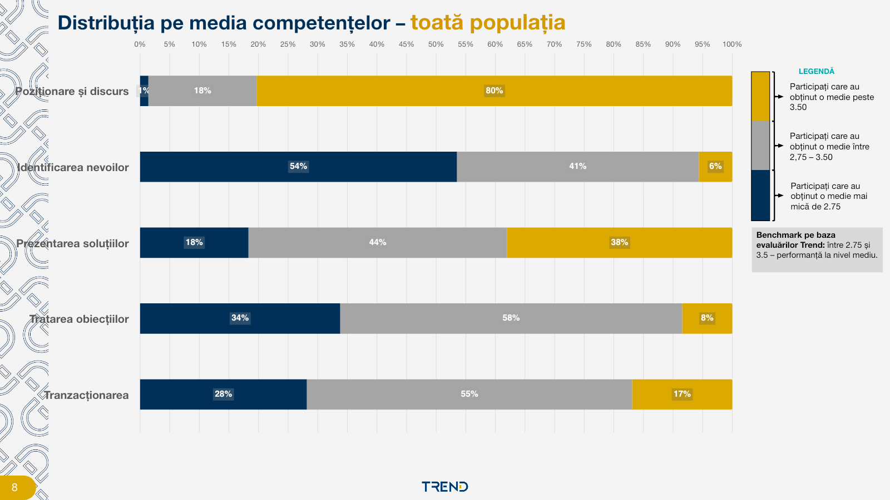
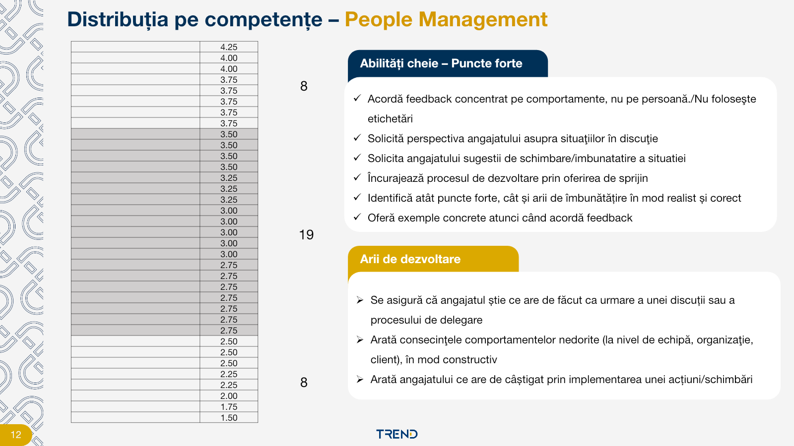
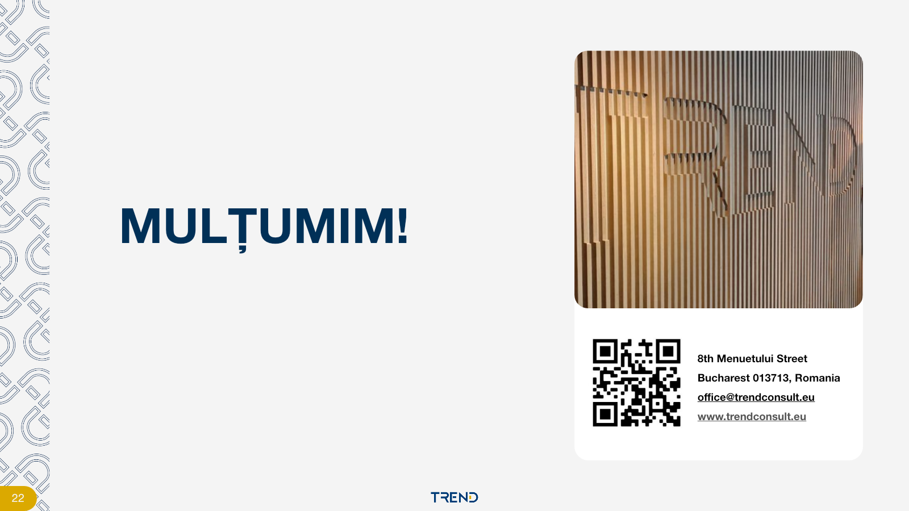

Instrumentul nu s-a inițializat încă.Reîncarcă acest fișier din folderul deploy. Dacă mesajul rămâne, păstrează folderul complet — inclusiv assets — și anunță echipa BHB.









Group Report FactoryInstrument intern · Assessment Centre